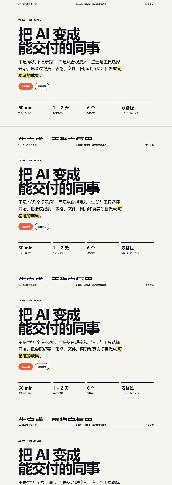
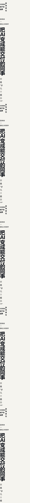

把任务说清楚
目标是什么、素材在哪里、哪些东西不能动。
AI AGENT IN ACTION · 不是听懂，是做成
教会你怎么使用 AI 智能体，把文件、表格、PPT、网页和重复工作，真正变成能打开、能修改、能交付的结果。
下周把那个方案再改一下…价格可能还要确认，小林跟一下。
预算？ / 谁负责 / 周几？
01新版方案 · 小林
02价格确认 · 待确认
03截止时间 · 待确认
3 项行动 · 2 项待确认10 REAL TASKS · 10 个独立成果
每个案例都从一个普通人手里的真实麻烦开始，以一个可以打开、检查和继续使用的成果结束。
CASE 04 · LIVE PROOF
你现在正在看的，就是这个任务的最终成果。它从一句口述需求开始，经过结构设计、内容组织、页面实现、手机适配和发布，最后变成一个可以直接分享的网页。


THE METHOD · 简单，但不是碰运气
目标是什么、素材在哪里、哪些东西不能动。
先看它准备怎么做，再决定是否让它执行。
随时能看到变化，发现不对马上停下。
数字能复算、网页能打开、文件能恢复。
AI 智能体实战落地
带上电脑，带一个真实但已脱敏的工作任务。我们一起把它做成一个能交付的成果，并让你下次可以自己完成。
我先选一个任务 ↗